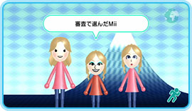
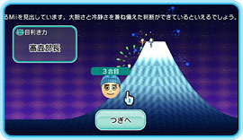

Ｎ.Ｏ.Ｍ2008年2月号で行ったＭｉｉコンテストチャンネルのコンテスト参加。 審査員、投稿者それぞれの立場で参加した結果をお伝えします。
審査員として参加したこのコンテスト、結果は・・・ なんと「審査課長」でした！ 左のＭｉｉから順に、７合目、３合目そして８合目まで登りました。 Ｍｉｉコンテストチャンネルからのコメントは 「テーマにあったＭｉｉを見出せる安定感のある目利き力を持っています。客観的な判断ができてるといえるでしょう。」ということです。
ん〜、でも、もうちょっとがんばって「審査部長」くらいまでは昇進したかったですね。 結構似ていると思ったんですが…。 あなたの目利き力はいかがでしたか？
投稿者として参加したこのコンテストの結果は？ 残念ながら、評価は３合目まで。 「まあまあテーマにあってるようです。普通です。」むむ、「まあまあ」だったんですね。 ちょっと普通過ぎたかもしれません。
このコンテストには、審査員としても参加してみました。 チョコをもらうのを楽しみにしている男の子２人と、あげるのを楽しみにしている女の子１人を選びました。 これは、女の子と男の子が９合目、もう１人の男の子が６合目と健闘し、こちらは「審査部長」になりました！
投稿しても、審査しても楽しいＭｉｉコンテスト。 新しいコンテストが次々と行われていますので、みなさんもぜひ参加してみてください！